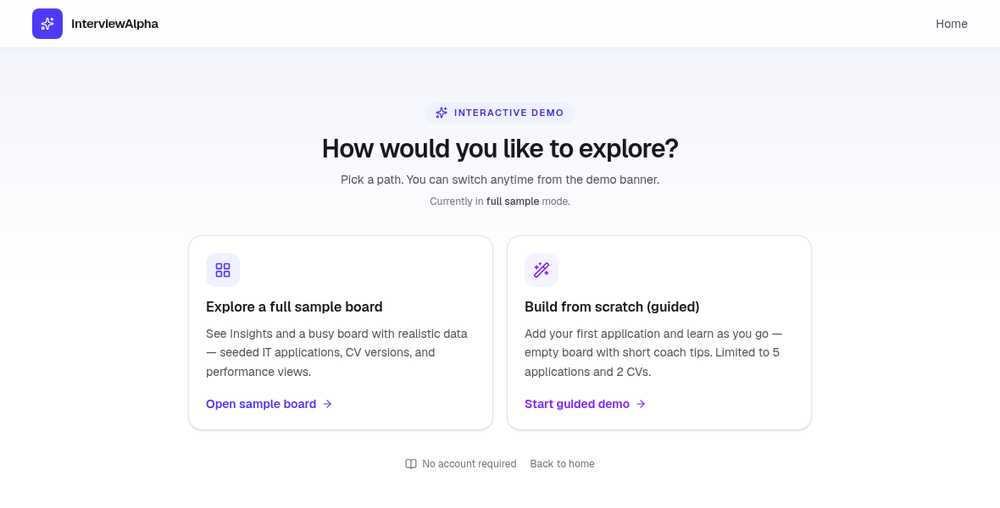
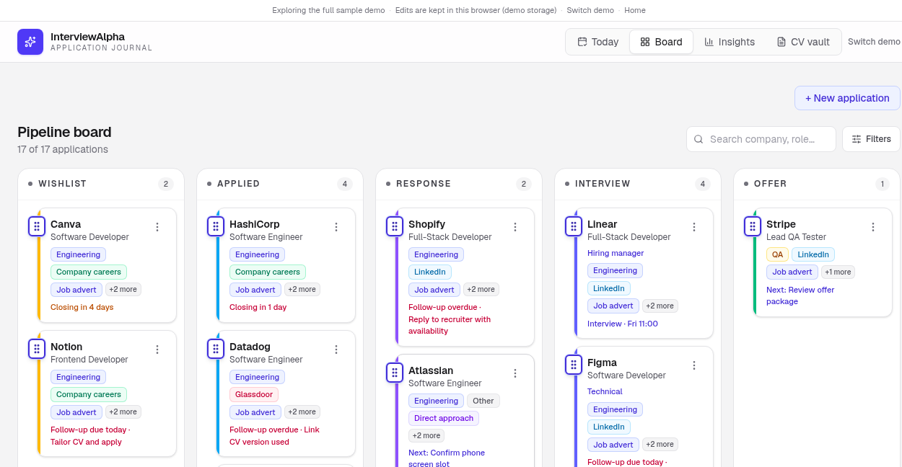
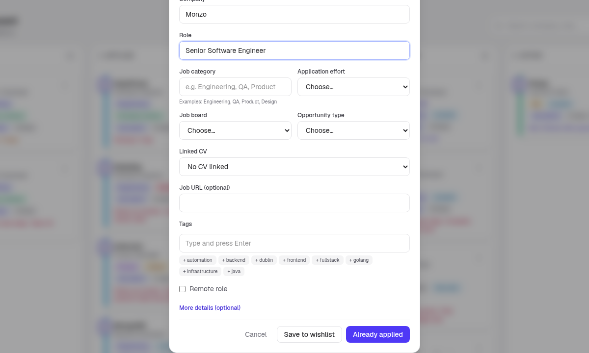
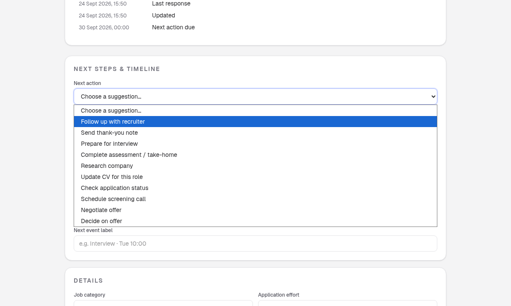
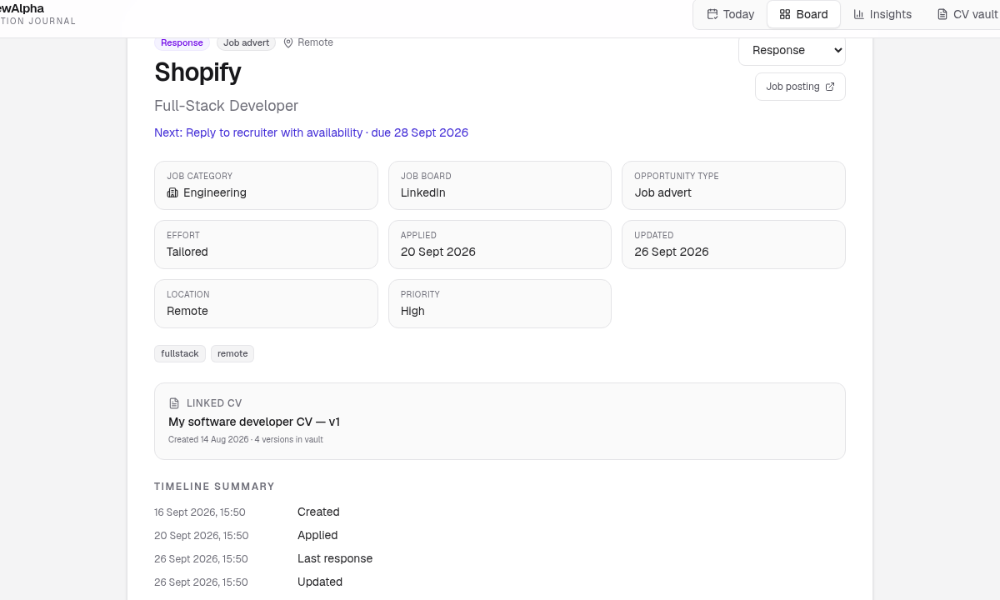
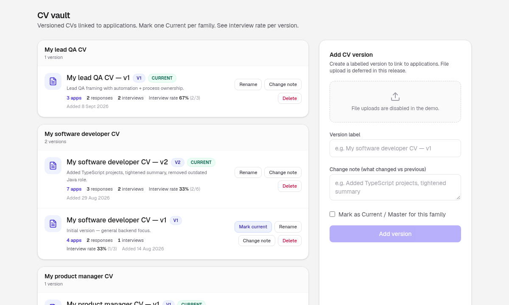
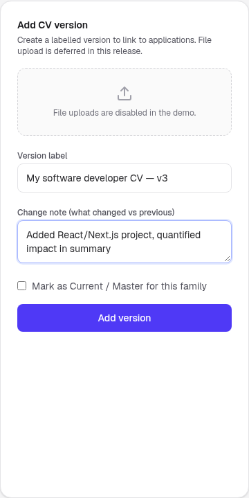
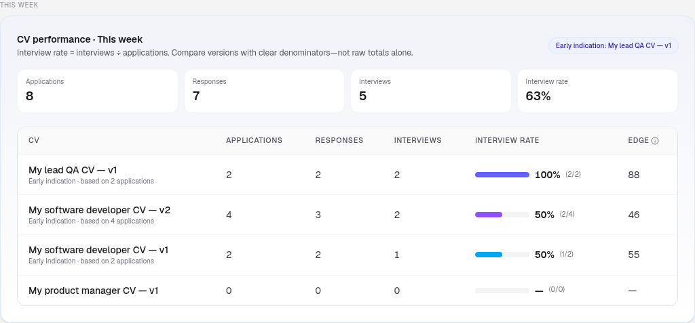
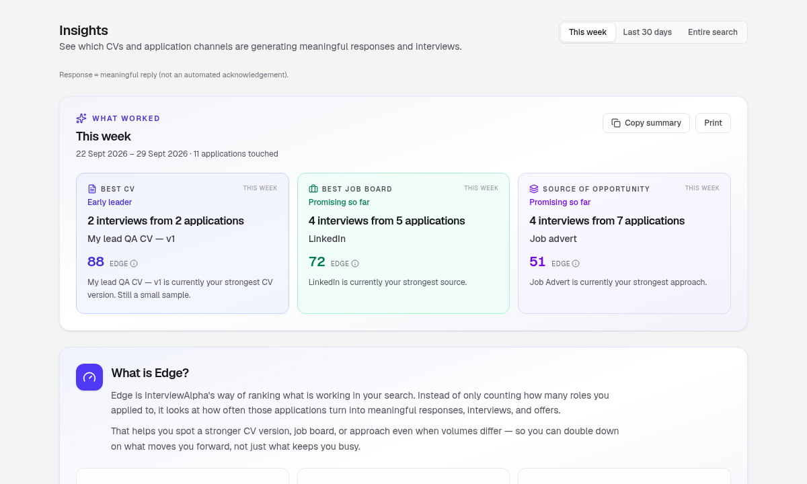
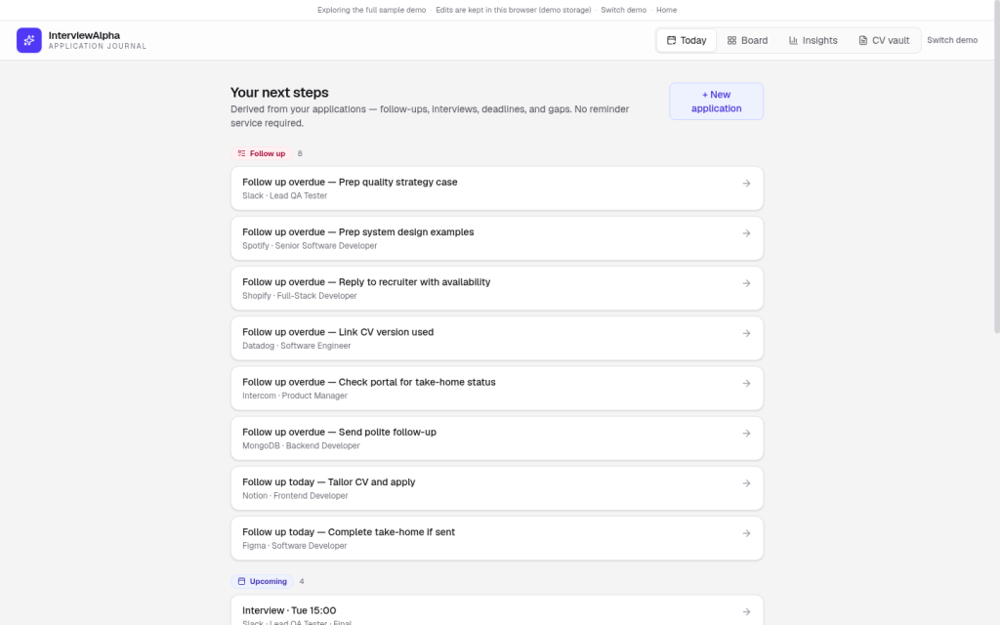

How to use InterviewAlpha (step by step)
A calm walkthrough of the interactive demo. No account needed. Edits stay in this browser for the demo session.
What you’ll do
In about ten minutes you will:
- Open a sample Board (or build a small one from scratch) and see how applications move through stages
- Add a labelled CV version in the vault and link it to a role
- Check Insights and Today so you know what’s working and what to do next
Short coach tips appear in the product as you go. This guide does not repeat them; use them when they show up.
Step 1
Open the demo
- From the homepage, choose Try the interactive demo.
- You land on
/demowith two paths:- Explore a full sample board - seeded applications, CV versions, and Insights ready to browse
- Build from scratch (guided) - empty board with short coach tips (capped at 5 applications and 2 CVs)
- Pick one. You can change later with Switch demo in the nav.

Step 2
Tour the Board
The top nav is: Today · Board · Insights · CV vault · Switch demo.
Open Board. Applications sit as cards in stage columns (for example Wishlist, Applied, Response, Interview, Offer). Each card shows company, role, tags, and a next step when one is set.
Use search and Filters when the board gets busy. The purple + New application button is how you add roles.

Step 3
Add an application
- On the Board, select + New application.
- Fill in the two required fields: Company and Role.
- Optionally add category, effort, job board, opportunity type, linked CV, job URL, and tags.
- Open More details (optional) and set a Next action (suggestion dropdown + free-text box). Helper: “Choose a suggestion or type your own.”
- Save with either:
- Save to wishlist (not applied yet), or
- Already applied (sends it into the Applied stage)
Keep the first pass light. You can enrich the card later.

Set a Next action (dropdown)
Suggested options:
- Follow up with recruiter
- Send thank-you note
- Prepare for interview
- Complete assessment / take-home
- Research company
- Update CV for this role
- Check application status
- Schedule screening call
- Negotiate offer
- Decide on offer
Keep one clear next action per live role. Today later groups those actions into a shortlist.

Step 4
Open an application and link a CV
Select any card to open its detail view. You’ll see stage, category, job board, tags, timeline, and a Linked CV section. Under Next steps & timeline, use the same Next action controls (suggestion dropdown + free-text box).
To connect a version:
- Open the application.
- Choose a labelled CV from the vault (or add one first in Step 5).
- Confirm the link so Insights can attribute outcomes to that version.

Step 5
Add a CV version in the vault
Open CV vault. Versions are organised by family (for example software developer, lead QA). Each version has a label, a change note, and optional Current status. Interview rates appear per version when applications are linked.
To add a version:
- Open CV vault.
- In Add CV version, enter a clear Version label (for example
My software developer CV - v3). - Write a short Change note (what changed vs the previous version).
- Optionally tick Mark as Current / Master for this family.
- Select Add version.
Then link that version from an application’s detail view (Step 4).


Step 6
Check Insights (CV performance)
Open Insights. Choose a period (for example This week). The CV performance table lists each linked version with:
- Applications
- Responses
- Interviews
- Interview rate
- Edge
Interview rate uses clear denominators (interviews ÷ applications), so you compare versions fairly rather than by raw totals alone.
Below that, What worked highlights early leaders: best CV, best job board, and strongest opportunity type for the period.


Step 7
Use Today for next actions
Open Today. Next steps are grouped so you can act without hunting the board:
- Follow up (overdue and due today)
- Upcoming (for example interviews)
- Deadline
- Stale
- Missing CV
Select a row to jump back to that application. Treat Today as your daily shortlist; keep the Board for the full picture.

Short tips
- Capture the role the day you apply, then refresh the next step when something moves.
- Prefer clear CV labels and change notes over perfect files in the demo; linking is what powers Insights.
- The header logo returns you to the homepage (
/), not Today. Use Switch demo if you want to reset between sample and guided paths. - Coach tips in the product are short on purpose; read them when they appear, then close them.
Try the demo
Ready to click through? Open the interactive demo from the homepage (Try the interactive demo), pick a sample board or the guided path, and walk Steps 2-7 once.
Ten calm minutes is enough to see the loop: Board → CV vault → Insights → Today.
Note for Dev (suggested URL)
Suggested live path when this guide ships: /guides/how-to-use-interviewalpha (preferred) or /help/how-to-use. Keep the slug stable for bookmarks and in-product help links. Serve the markdown or a rendered HTML page with images under a sibling images/ folder (same relative paths as this draft: images/01-… through images/07-…). Mark the page clearly as demo-accurate so we do not imply accounts, cloud sync, payments, or real file upload.